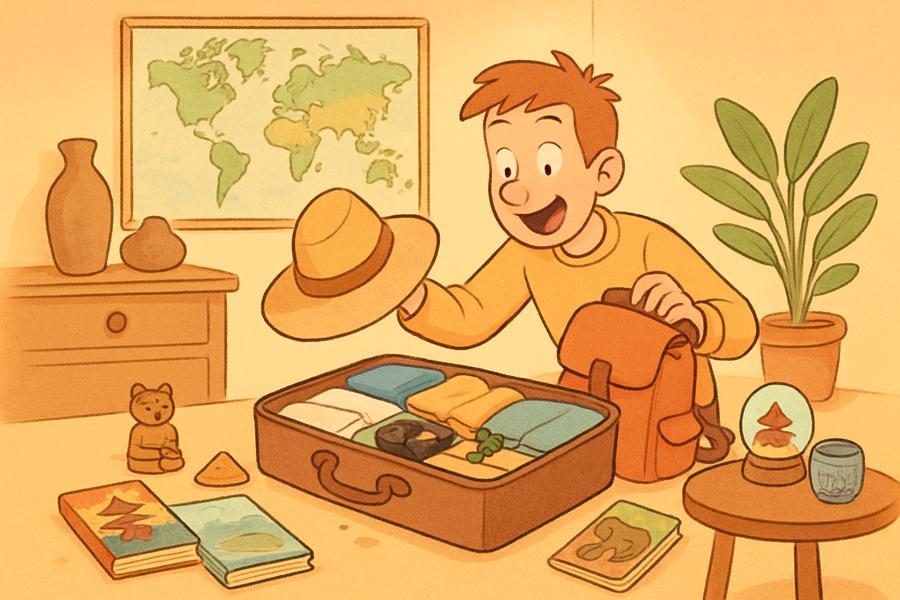

Écoutez, puis cliquez sur 🎤 et répétez.
| Verbe | Usage | Exemple |
|---|---|---|
| SAVOIR | savoir faire qqch / un fait | Je sais parler chinois. / Il sait que tu pars. |
| CONNAÎTRE | être familier de qqn/qqch | Je connais Paris. / Tu connais Marie ? |
| Pronom | Rôle | Exemple |
|---|---|---|
| QUI | sujet | C’est l’ami qui parle français. |
| QUE / QU’ | objet | C’est le film que j’ai vu hier. |
Classez chaque expression avec le bon verbe.
Choisissez SAVOIR ou CONNAÎTRE.
Aidez-nous à améliorer cette leçon.
Votre question sera transmise au professeur.